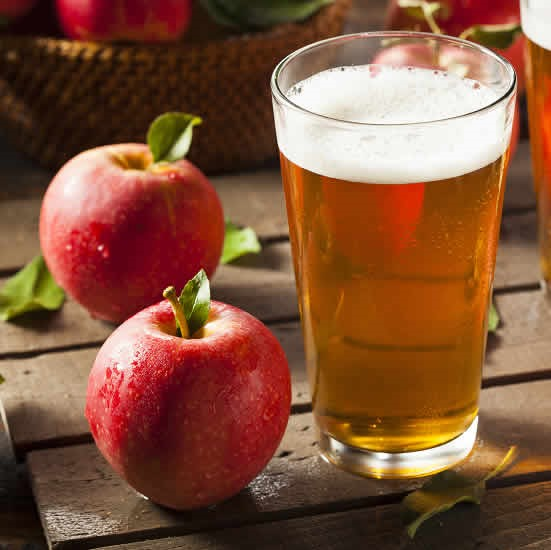

Bruised Apple Sauce
Ingredients
• 4 bruised apples
• ½ tsp cinnamon
• ¼ C sugar
• ¾ C water
Directions
1. Peel the apples, remove the stems and cores .
2. In a saucepan, combine apples, water, sugar, and cinnamon .
3. Cover, and cook over medium heat for 15 to 20 minutes, or until apples are soft .
4. Allow to cool, then mash with a fork or potato masher .
5. Apple Peel and Core Tea .
Ingredients
• 6 apple peels/apple cores
• 3-4 C water
• 1/2 tsp cinnamon (or 1 cinnamon stick)
• 1 Tbs honey
• 1 Tbs lemon juice
Directions
1. Place apple peels in a sauce pan. Cover with water and lemon juice and cinnamon.
2. Bring to a boil for 10-15 minutes, until liquid is colorful and appley.
3. Strain out the apple peels using a colander positioned over a largebowl, then, add in the honey.
4. Taste... add additional honey or cinnamon to taste A.
